السلسلة 120
السيارة (صنف B) · 40 سؤال بالصوت. حاول تجاوب بوحدك، من بعد شوف الجواب.
السؤال 1
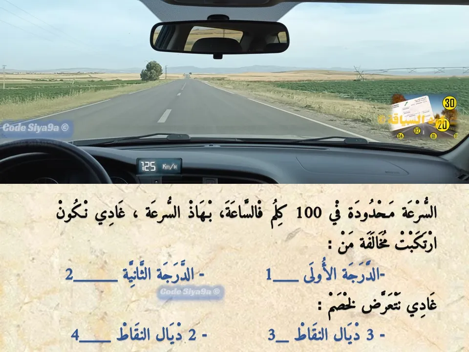
بيّن الجواب
الجواب الصحيح: 2 و 4
في هذا الحالة تجاوزت السرعة ب 25 كلم في الساعة.
🫴عند تجاوز السرعة القصوى المسموح بها ب بأكثر من 20 الى 30 كلم في الساعة. كيتعتبر مخالفة من الدرجة الثانية👮. كتعرض السائق :
- لغرامة مالية من 300 حتى 500 درهم .
- لسحب 2 ديال النقط من رصيد رخصة السياقة.
السؤال 2
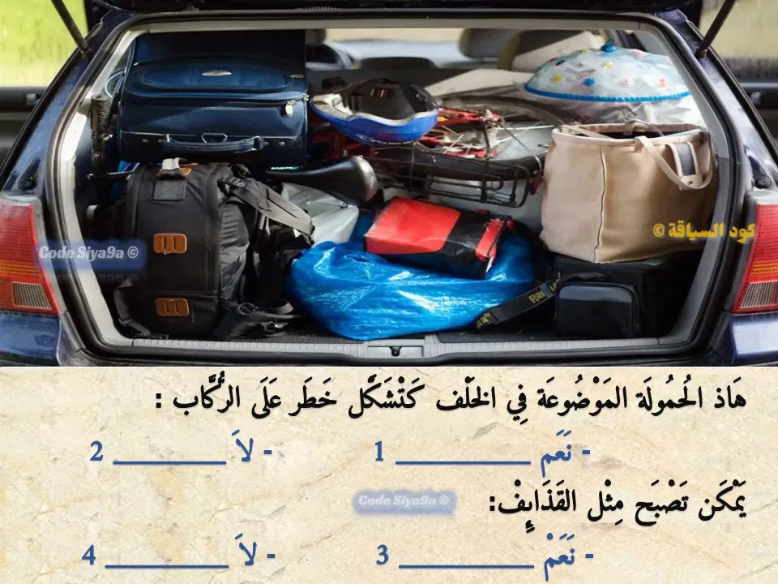
بيّن الجواب
الجواب الصحيح: 1 و 3
هذا الحمولة الموضوعة في الخلف غير مثبثة في سندوق الأمتعة. واجب تغطيتها بالغطاء الواقي .
- في حالة وقوع حادثة هذا الأمتعة ممكن تطير و تضرب الركاب لي في الأمام.
- ممكن تصبح مثل القدائق بالخصوص الا وقع اصطدام بسرعة كبيرة .
السؤال 3
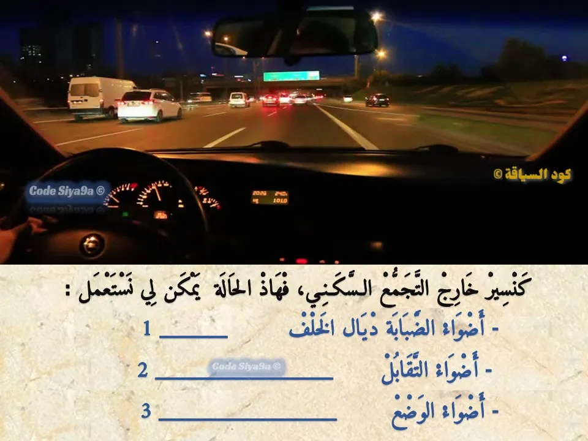
بيّن الجواب
الجواب الصحيح: 2 و 3
السير خارج التجمع السكني في هذا الحالة كاين عربات قدامي . و بالتالي واحب عليا نشغل اضواء التقابل .
- في هذا الحالة يمكن لي نستعمل بالإضافة لاضواء التقابل اضواء الوضع .
- ⛔ في هذا الحالة ما يمكنش لي نستعمل اضواء الضبابة حيت ما كاينش الضبابة .
السؤال 4
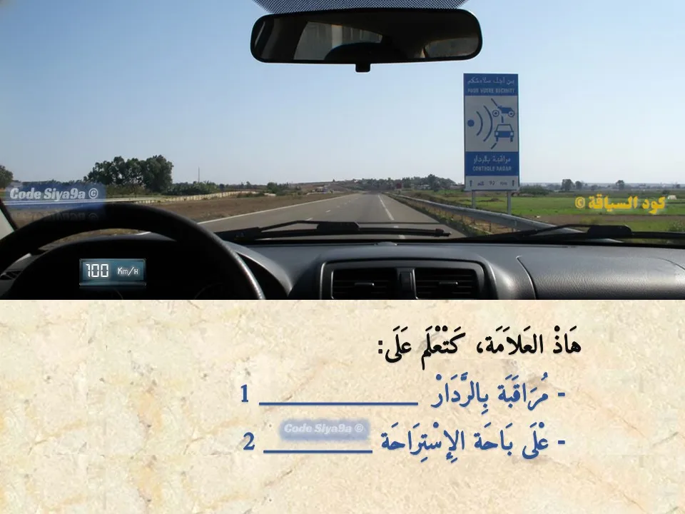
بيّن الجواب
الجواب الصحيح: 1
هذا العلامة ديال الارشاد كتعلم على مراقبة بالردار.
السؤال 5
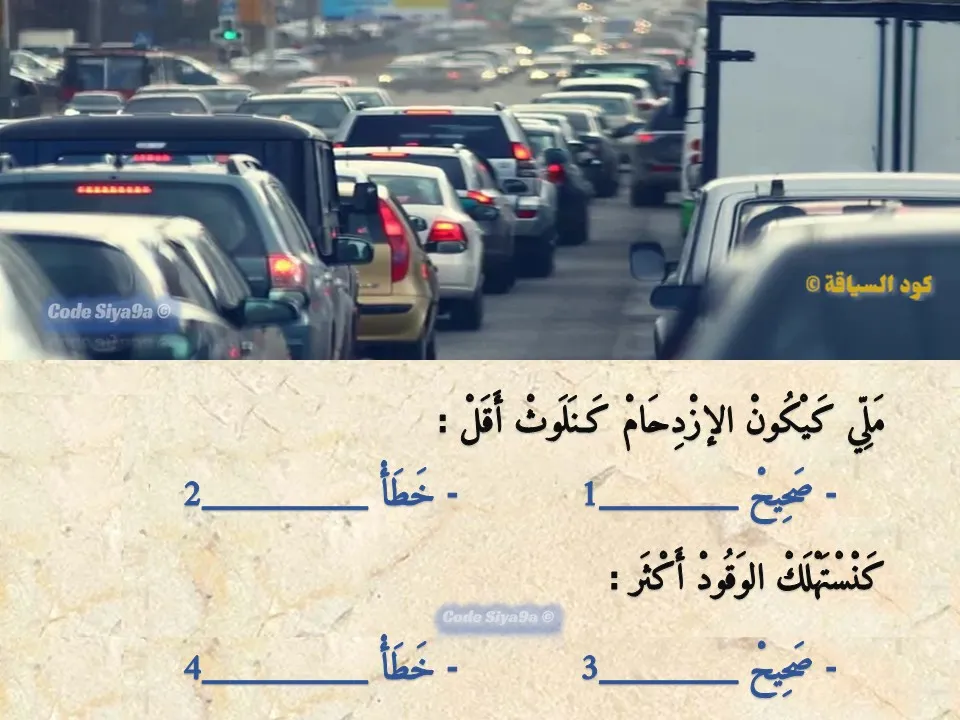
بيّن الجواب
الجواب الصحيح: 2 و 3
عند الازدحام المروري حركة السير كتكون قليل و بالتالي كيتزاد انبعات الغازات الملوثة للهواء.
- و من طبيعة كيتزاد الاستهلاك حيت كيصبح المحرك كيستهلك كمية كبيرة باش يقطع مسافة قليلة .
السؤال 6
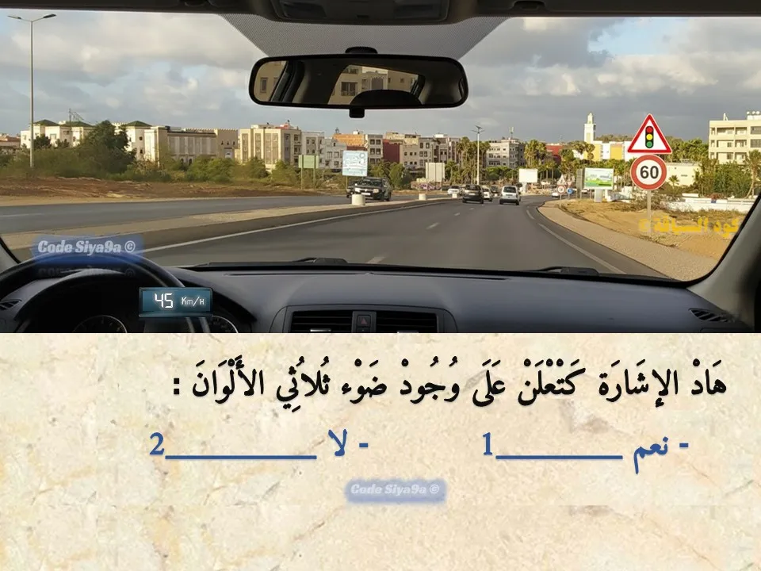
بيّن الجواب
الجواب الصحيح: 1
هذا الإشارة ديال الخطر كتعلم على وجود ضوء ثلاثي الألوان على بعد 50 مثر.
السؤال 7
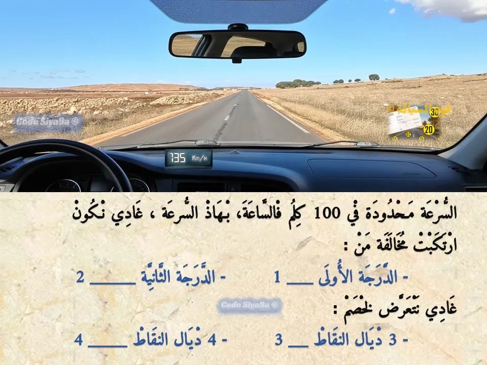
بيّن الجواب
الجواب الصحيح: 1 و 4
في هذا الحالة تجاوزت السرعة ب 35 كلم في الساعة.
🫴عند تجاوز السرعة القصوى المسموح بها ب بأكثر من 30 الى اقل من 50 كلم في الساعة. كيتعتبر مخالفة من الدرجة الأولى 👮. كتعرض السائق :
- لغرامة مالية من 700 حتى 1400 درهم .
- لسحب 4 ديال النقط من رصيد رخصة السياقة.
السؤال 8
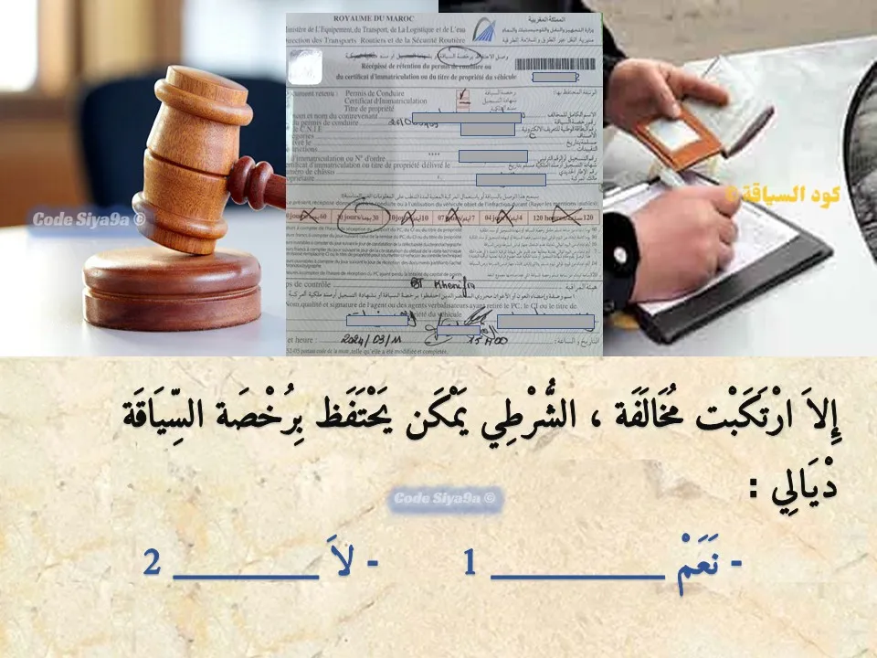
بيّن الجواب
الجواب الصحيح: 1
في حالة ارتكاب مخالفة كتستوجب غرامة . مثلا :" عدم احترام إجبارية الوقوف عند علامة قف ".
- في حالة الاداء في عين المكان غادي تخلص 400 درهم .
- في حالة عدم الاداء غادي يحتفظ عون محرر المحضر باحد الأوراق التالية : رخصة السياقة او شهاذة التسجيل ديال المركبة .
و كيسلمك وصل للاداء. و ما يمكنش ليك تسترجع الأوراق ديالك حتى تخلص الغرامة ديالك .
السؤال 9
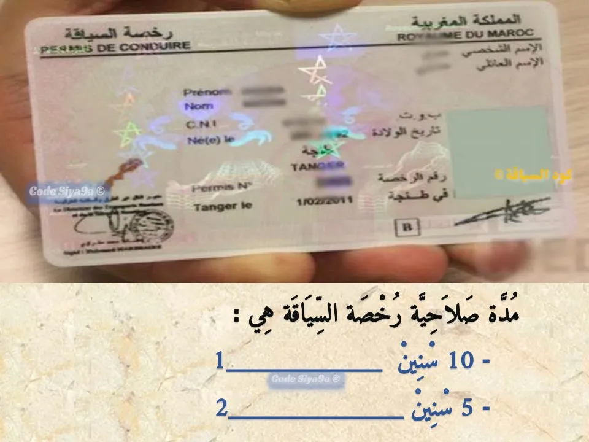
بيّن الجواب
الجواب الصحيح: 1
مدة صلاحية رخصة السياقة هي 10 سنين .
السؤال 10
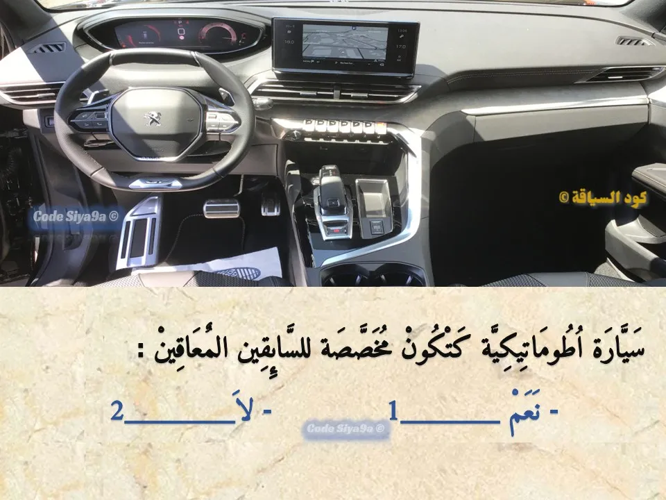
بيّن الجواب
الجواب الصحيح: 2
لا ليس بالضرورة ،في السيارة الاتوماتيكية كيستعملوه حتى الأشخاص العاديين .
السؤال 11
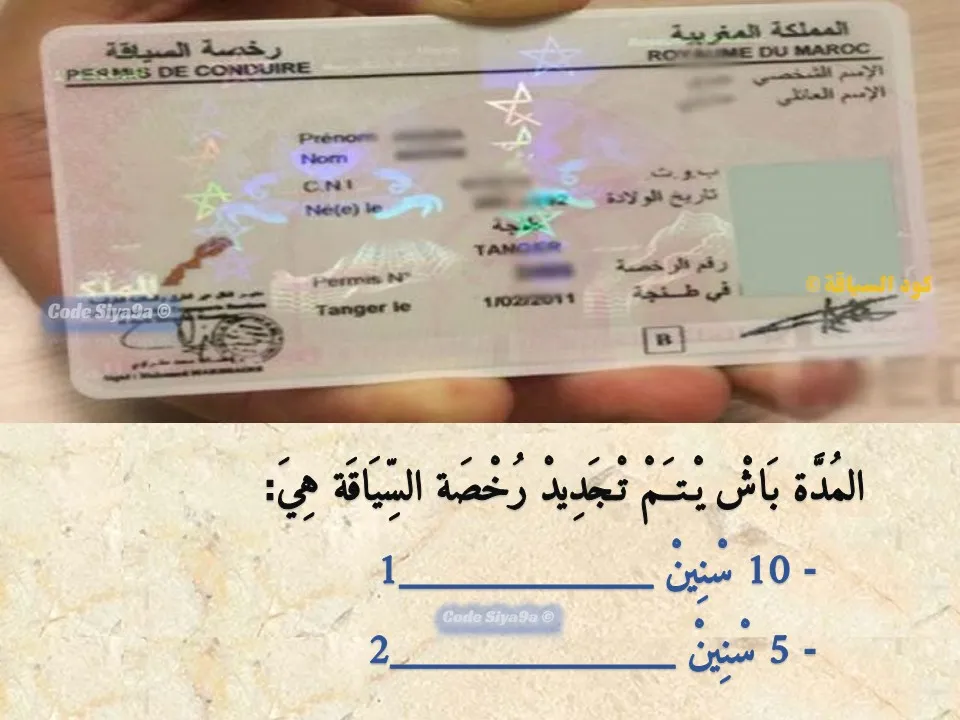
بيّن الجواب
الجواب الصحيح: 1
عمر رخصة السياقة هو 10 سنين فحال البطاقة الوطنية .
السؤال 12
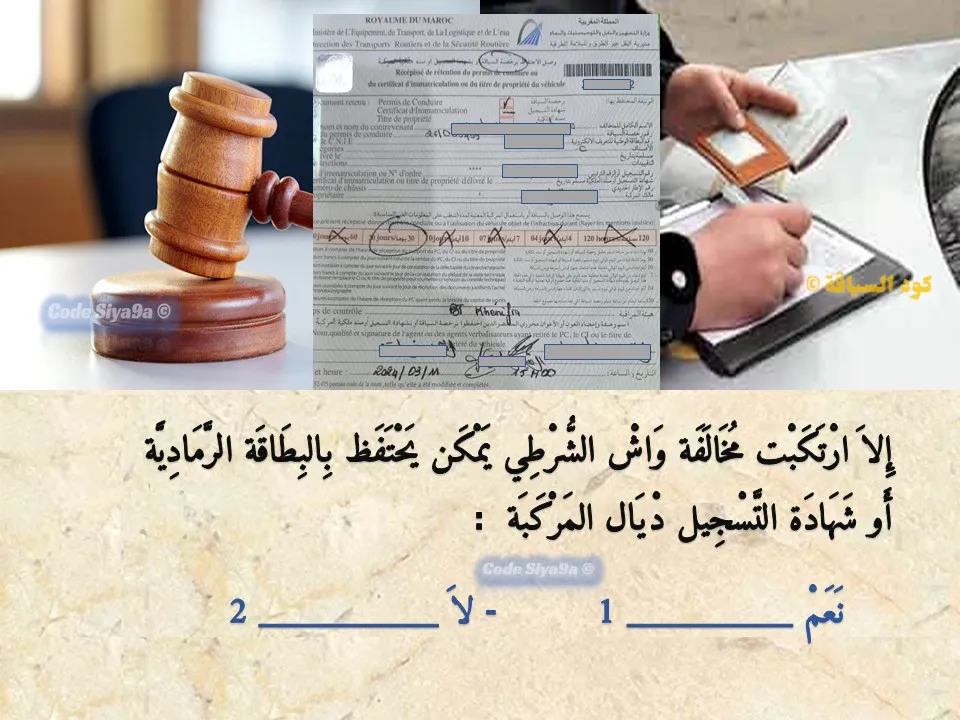
بيّن الجواب
الجواب الصحيح: 1
في حالة ارتكاب مخالفة كتستوجب غرامة . مثلا :" عدم احترام إجبارية الوقوف عند علامة قف ".
- في حالة الاداء في عين المكان غادي تخلص 400 درهم .
- في حالة عدم الاداء غادي يحتفظ عون محرر المحضر باحد الأوراق التالية : رخصة السياقة او شهاذة التسجيل ديال المركبة .
و كيسلمك وصل للاداء. و ما يمكنش ليك تسترجع الأوراق ديالك حتى تخلص الغرامة ديالك .
السؤال 13
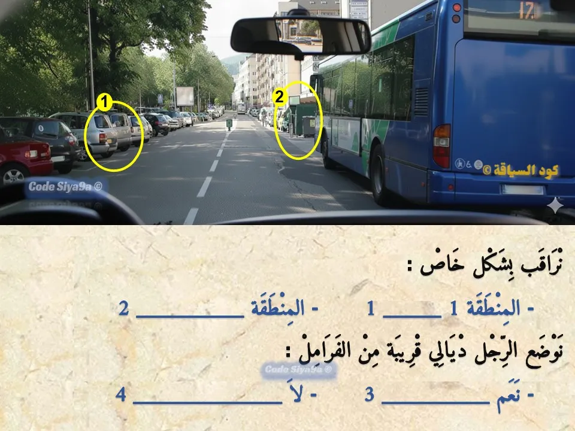
بيّن الجواب
الجواب الصحيح: 2 و 3
الخطر الحقيقي كيتواجد في المنطقة رقم 2 حيت غادي نتجاوز هذا الحافلة كيان خطر ديال مرور الراجلين. و بالتالي واجب عليا نكون مستعد للحصر.
السؤال 14
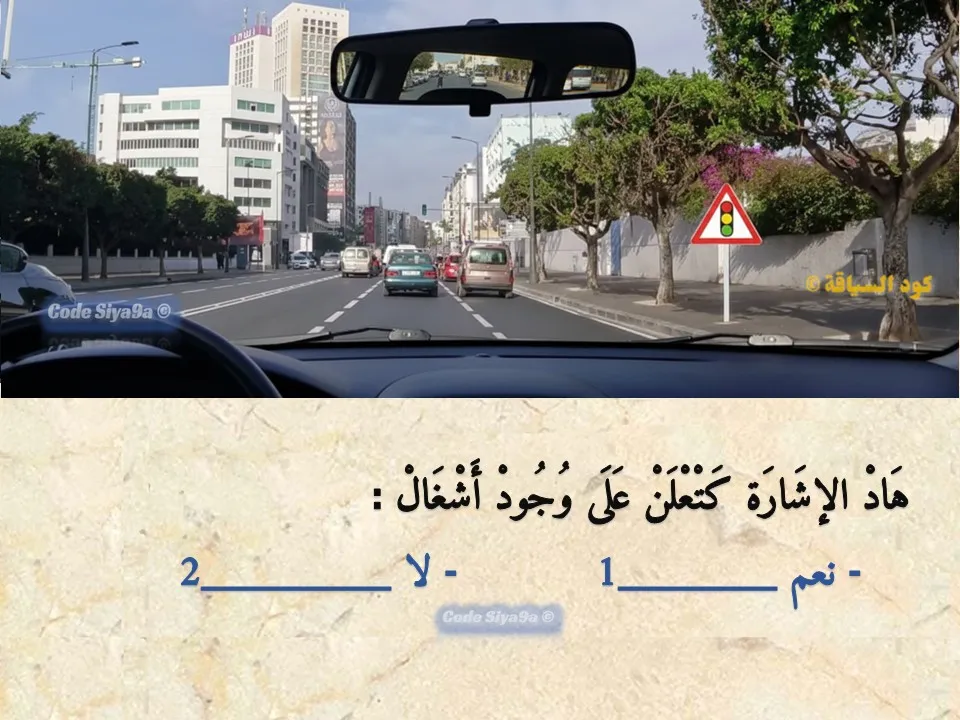
بيّن الجواب
الجواب الصحيح: 2
هذا العلامة ديال الخطر . كتعلم على وجود ضوء ثلاثي الألوان و ليس اشغال .
السؤال 15
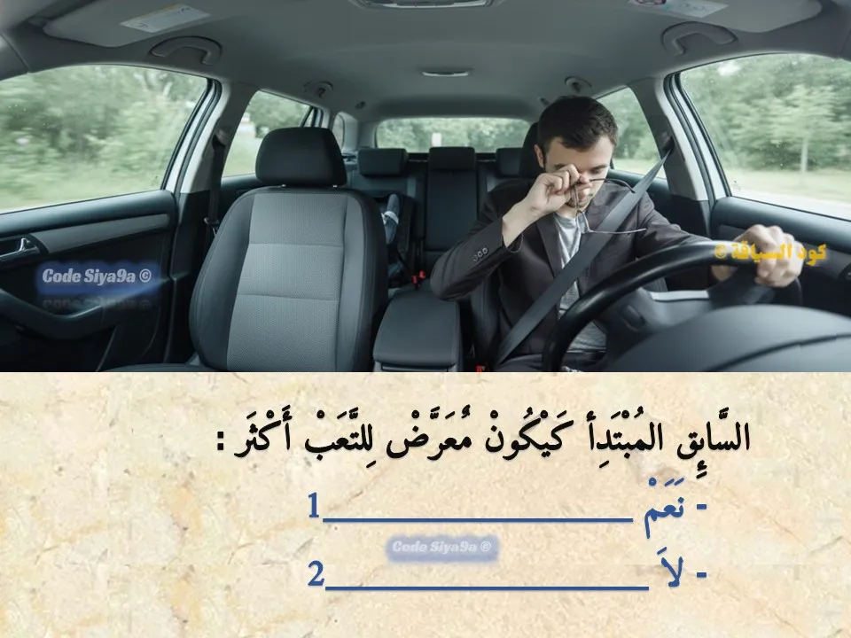
بيّن الجواب
الجواب الصحيح: 1
السائق المبتدا كيكون معرض للتعب اكثر . نظرا لنقص في الخبرة
السؤال 16
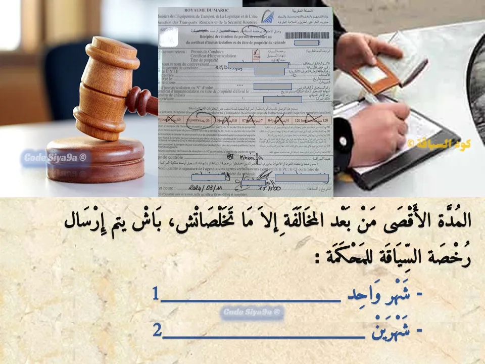
بيّن الجواب
الجواب الصحيح: 1
المدة الاقصى في حالة ارتكبتي مخالفة و خلصتيش هي شهر واحد . من بعد هذا المدة كيتم ارسال رخصة السياقة للمحكمة .
السؤال 17
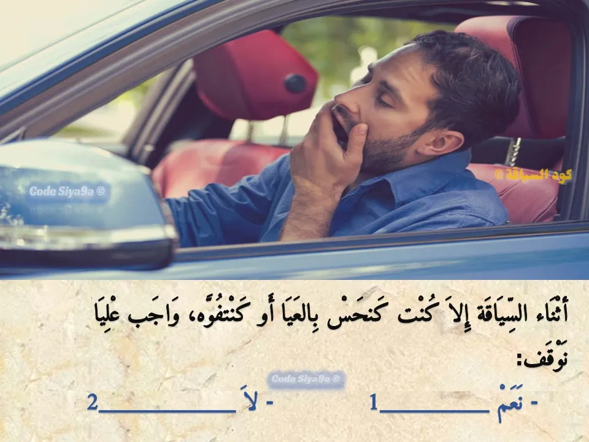
بيّن الجواب
الجواب الصحيح: 1
العيا و التتاؤب كأدي لضعف التركيز و التقدير الجيد المسافة الأمان . وهو مؤشر على أن السائق يقدر يتعرض للنوم في اي لحضة .
و بالتالي واحب عليك توقف كل ما حسيتي بالعيا .
السؤال 18
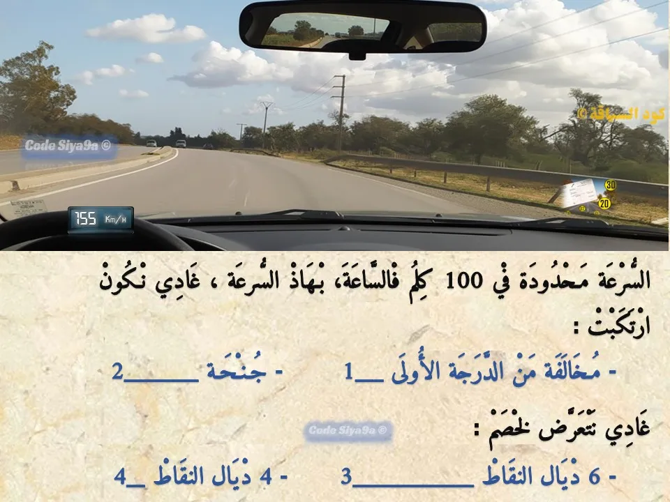
بيّن الجواب
الجواب الصحيح: 2 و 3
في هذا الحالة تجاوزت السرعة ب 55 كلم في الساعة.
🫴عند تجاوز السرعة القصوى المسموح بها ب بأكثر من 50 كلم في الساعة. كيتعتبر جنحة 👮. كتعرض السائق :
- لغرامة مالية من 4000 حتى 8000 درهم .
- لسحب 6 ديال النقط من رصيد رخصة السياقة.
- توقيف رخصة السياقة لمدة تتراوح بين شهر واحد الى ثلاث اشهر .
🚨في حالة عودة كيتم مضاعفة العقوبة
السؤال 19
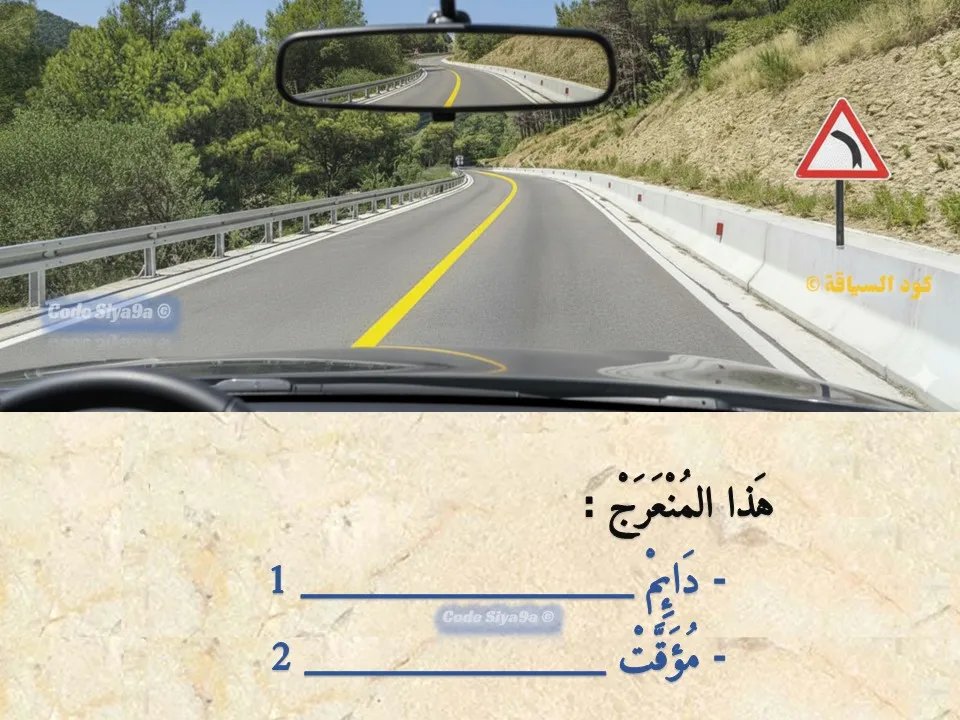
بيّن الجواب
الجواب الصحيح: 1
التشوير الطرقي كيضم:
- علامة ديال الخطر دائمة كتعلم على منعرج على ليسر.
- الخطر بالاصفر مؤقت كيعلم بلي ممنوع تجاوز الخط .
و بالتالي لي مؤقت في هذا الحالة هو المنع ديال التجاوز اما المنعرج راه دائم .
السؤال 20
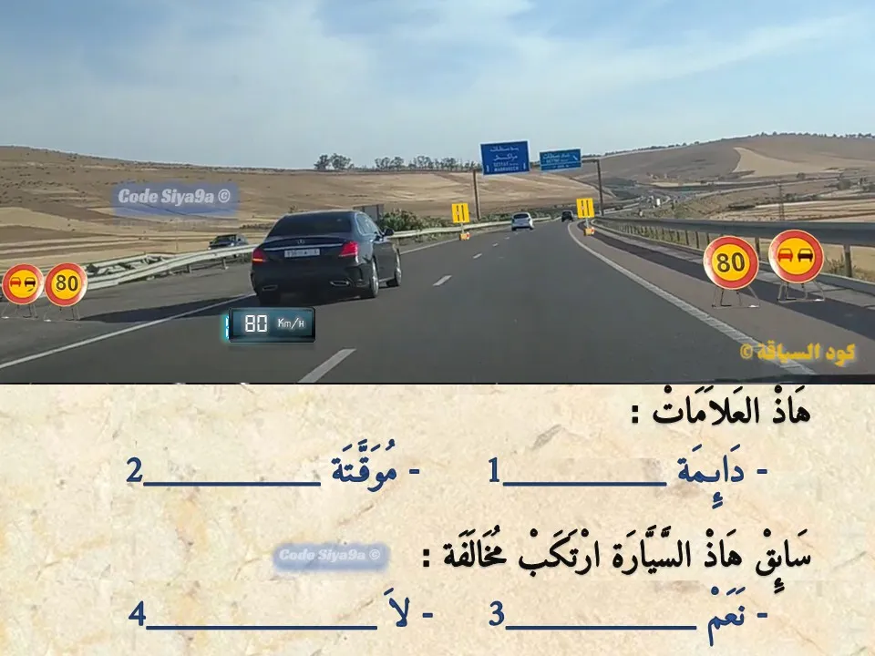
بيّن الجواب
الجواب الصحيح: 2 و 3
هذا التشوير الطرقي باللون الاصفر مؤقت. كيعلم:
- بلي التجاوز غادي يصبح ممنوع ابتدأ من العلامة.
- تحديد السرعة في 80 كلم في الساعة.
هذا السيارة تجاوزاتني رغم وجود علامة منع التجاوز .و بالتالي ارتاكبات مختلفة من الدرجة الأولى.
السؤال 21
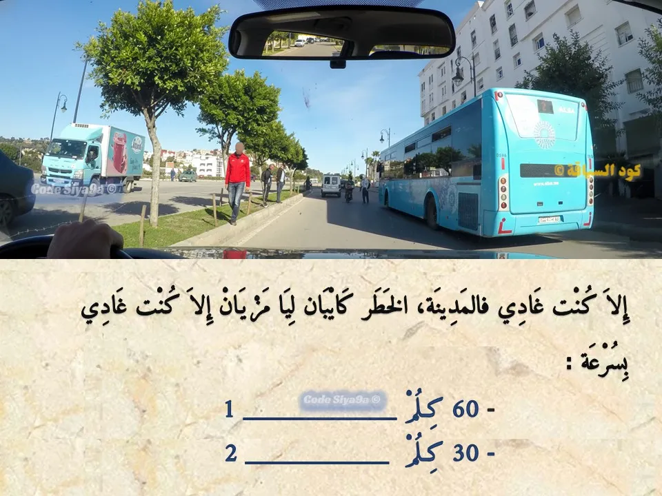
بيّن الجواب
الجواب الصحيح: 2
كلما تزادت السرعة كلما مجال الرؤية كيتقص .
و بالتالي بسرعة 30 كلم في الساعة غادي نشوف الخطر بوضوح اكثر .
السؤال 22
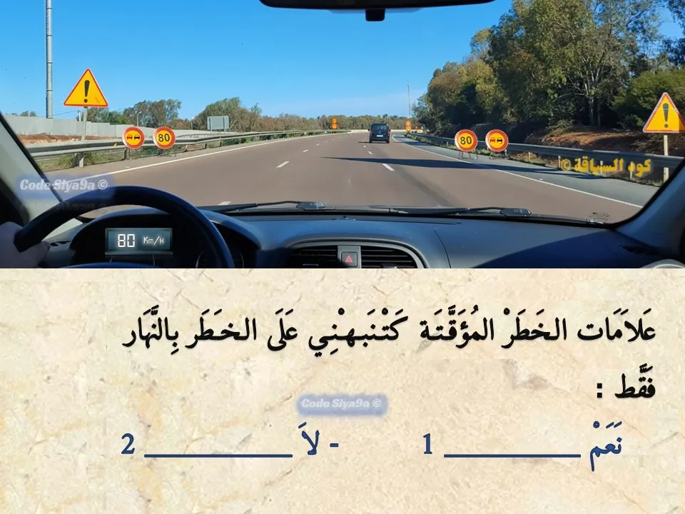
بيّن الجواب
الجواب الصحيح: 2
علامات الخطر الموقت هيا علامات كتنبه السائقين بالليل و حتى بالنهار .
السؤال 23
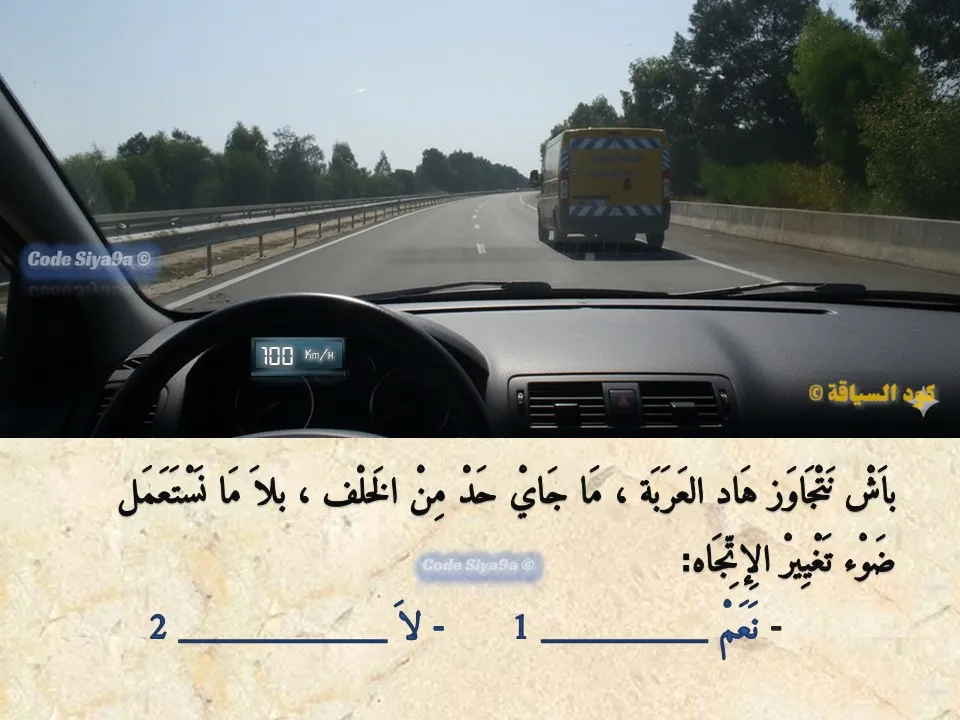
بيّن الجواب
الجواب الصحيح: 2
عدم استعمال مؤشر تغيير الاتجاه عند تغير الإتجاه او تغيير المسلك ،كيتعتبر مختلفة من الدرجة الثالثة كيتعاقب بغرامة مالية ما بين 200 و 400 درهم .
السؤال 24
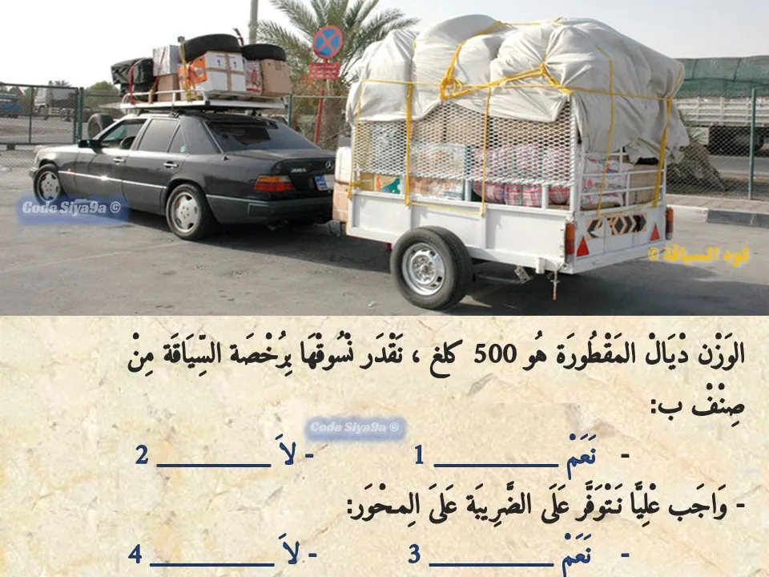
بيّن الجواب
الجواب الصحيح: 1 و 4
الوزن الاقصى مع الحمولة لي خاص يكون ف المقطورة باش نقدر نسوقها برخصة السياقة من صنف ب هو 750 كلغ .
- يمكن لي نسوق هذا المقطورة لي وزنها 500 كلغ برخصة السياقة من صنف ب.
- الضريبة على المحور كتصبح واجب الاداء ديالها الا تجاوز مجموع الوزن مع الحمولة ل 3000 كلغ .
السؤال 25
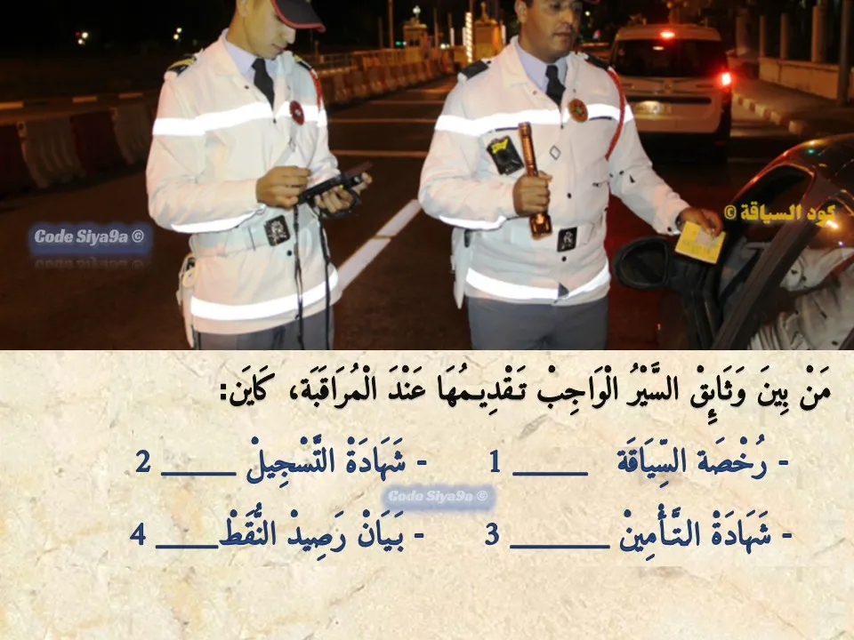
بيّن الجواب
الجواب الصحيح: 1 و 2 و 3
من بين الوثائق الواجب الادلاء بها عند كل مراقبة :
- رخصة السياقة.
- شهاذة التسجيل.
- شهاذة التأمين.
- الضريبة السنوية.
- شهاذة الفحص التقني في حالة كان المركبة كيتجاوز العمر ديالها 5 سنين.
السؤال 26
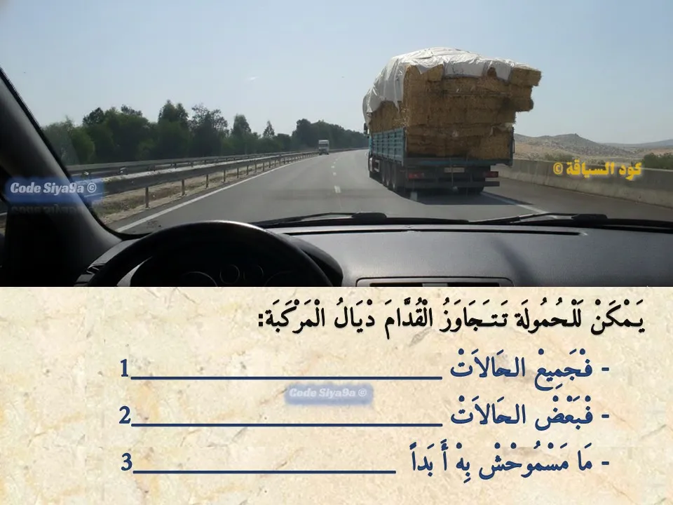
بيّن الجواب
الجواب الصحيح: 3
ما يمكنش للحمولة تجاوز القدام ديال المركبة في جميع الحالات،
السؤال 27
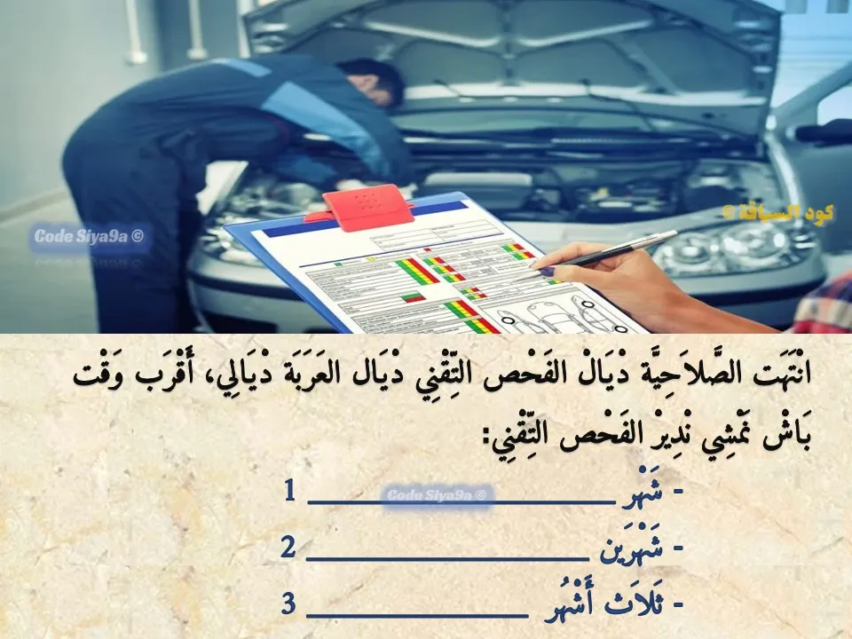
بيّن الجواب
الجواب الصحيح: 1
من الواجب القيام بالفحص التقني في أقرب وقت ممكن و الا غادي نكون ارتكبت مخالفة. و يتم توقيف المركبة.
السؤال 28
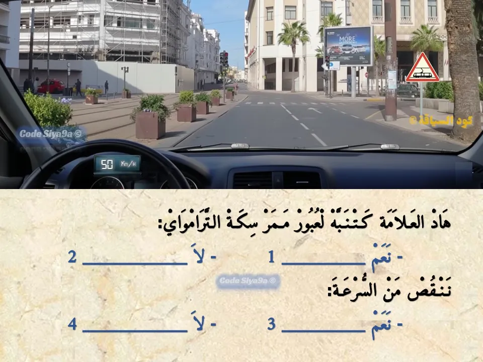
بيّن الجواب
الجواب الصحيح: 1 و 3
هذا العلامة ديال الخطر كتعلم خطر ممر سكة الطرامواي على بعد 50 متر . في هذا الحالة واجب عليا ننقص من السرعة و نتأكد ان الممر خاوي عاد ندوز .
السؤال 29
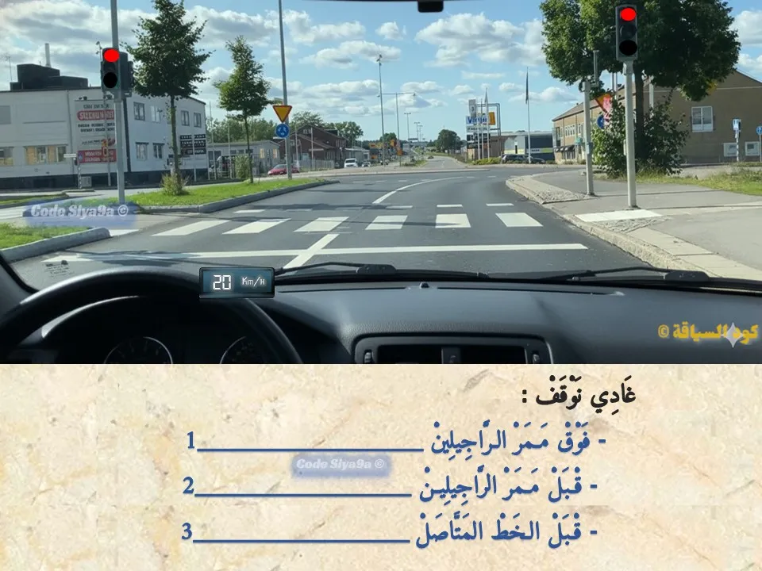
بيّن الجواب
الجواب الصحيح: 3
التوقف عند الضوء الاحمر كيكون قبل الخط المتاصل .
السؤال 30
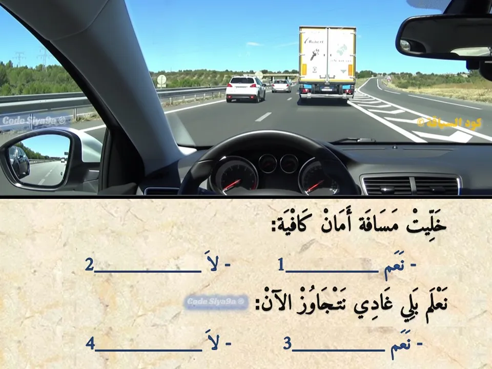
بيّن الجواب
الجواب الصحيح: 2 و 4
في هذا الحالة كنسير في طريق سريع يعني غادي نكونوا غادين سرعة كبيرة . و الاحظت في جنب الطريق كيفصبني على الشاحنة لي قدامي اقل من خط يعني اقل من 20 متر .
- باش نتجاوز من الواجب نراقب الخلف و في جنبي واش كاين شي مركبة اخرى كتقوم بالتجاوز. في هذا ما يمكنش ليا نتجاوز .
السؤال 31
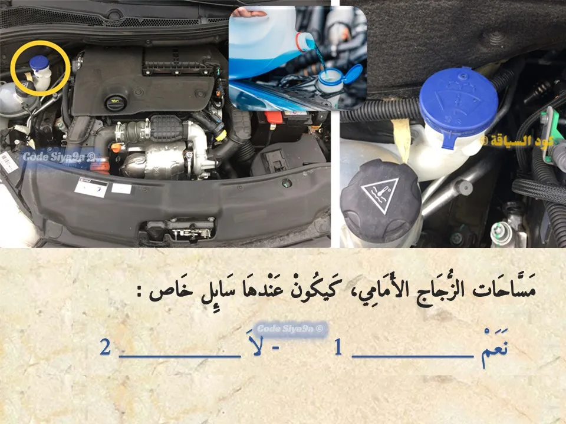
بيّن الجواب
الجواب الصحيح: 1
مساحات الزجاج الامامي كيكون عندها سائل خاص . كيتغير حسب الفصول .
- كيكون مضافة ليه بعض السوائل لي كتمكن من إزالة الغبار و الاشياء العالقة في الزجاج الامامي.
السؤال 32
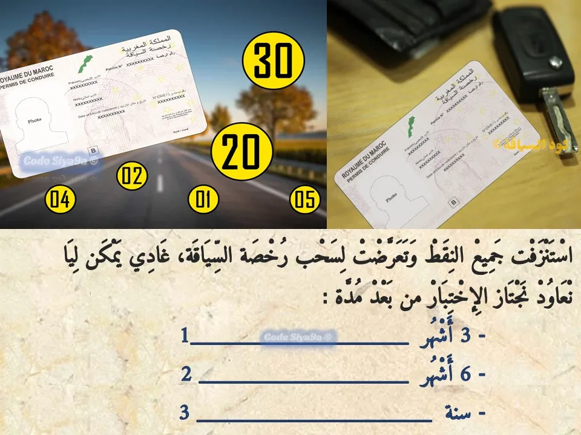
بيّن الجواب
الجواب الصحيح: 2
في حالة ارتكاب عدة مخالفات لي كيتم فيهم سحب جميع النقط.
- كيتم سحب رخصة السياقة و كتمنع السائق من اجتياز امتحان رخصة السياقة لمدة يمكن تفوق 6 اشهر .
السؤال 33
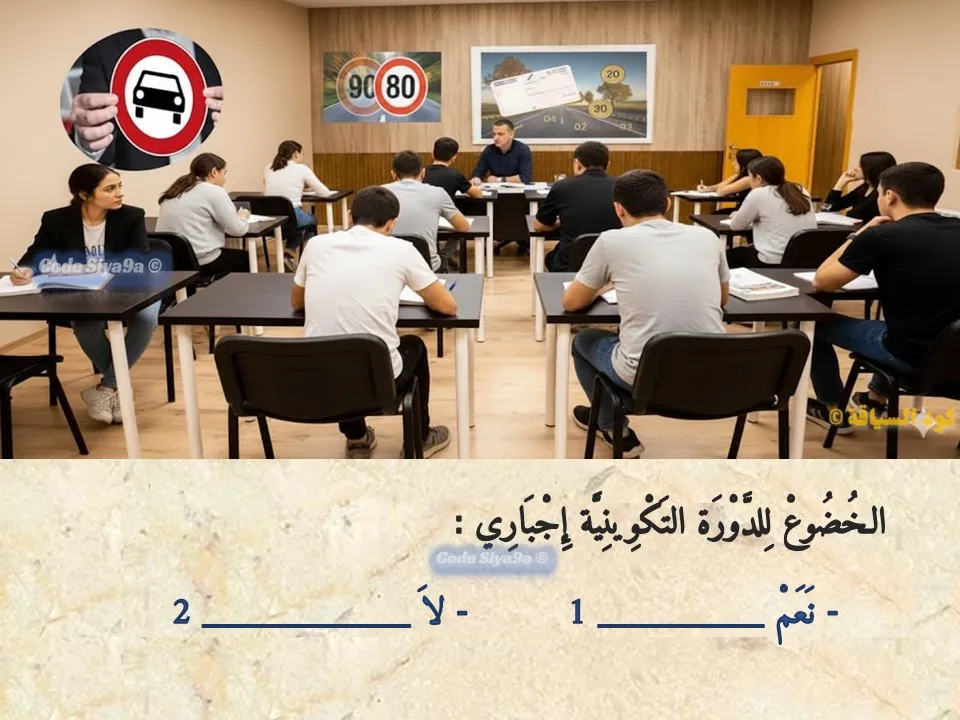
بيّن الجواب
الجواب الصحيح: 2
الخضوع للدورة التكوينية في السلامة الطرقية. كتمكن من استرجاع النقط بعد سحبها من رصيد رخصة السياقة.
- هذا الدورة التكوينية ماشي إجبارية . كيديروها فقط السائقين لي فقدو نقط من رصيد رخصة السياقة.
السؤال 34
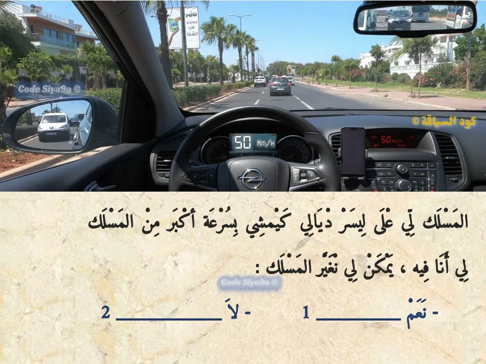
بيّن الجواب
الجواب الصحيح: 2
في هذا الحالة منين يكون الزحام ، و كتقلب وثيرة السير .
- كيصبح صعيب باش تغيير المسلك.
- في هذا الحالة كاين سيارة قريبة مني في المسلك ديال ليسر و بالتالي ما يمكنش لي تغيير المسلك الآن .
السؤال 35
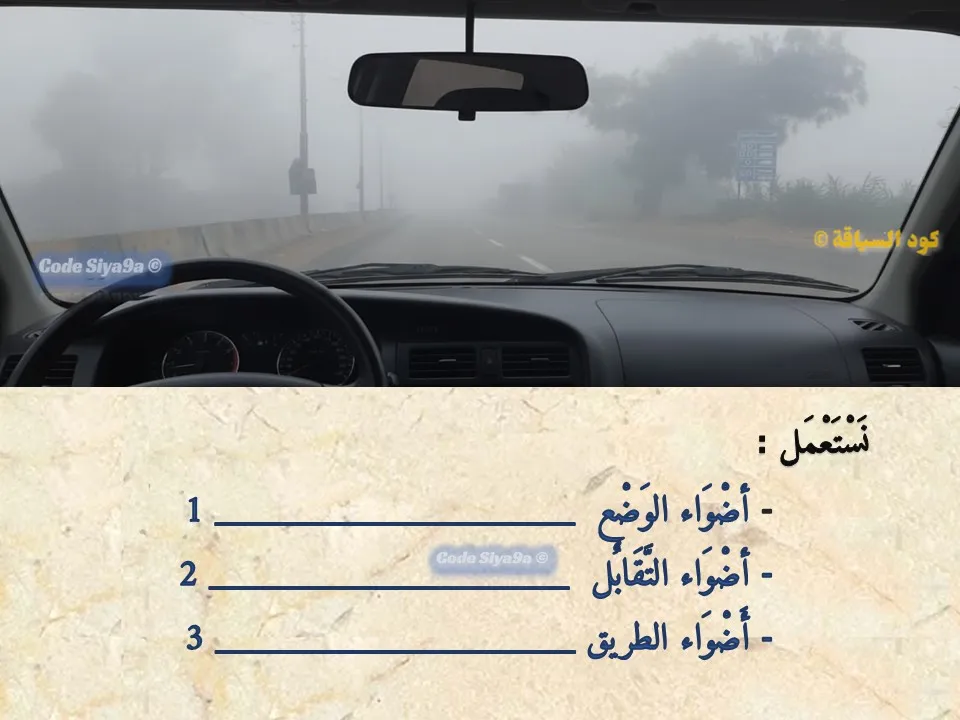
بيّن الجواب
الجواب الصحيح: 1 و 2
في وقت الضبابة و في هذا الحالة يمكن لي نستعمل :
- اضواء الوضع و لكن ماشي بحدهم .
- اضواء التقابل .
- اضواء الضباب ديال القدام و ديال الخلف .
- ⛔ و كيصبح ممنوع تستعمل اضواء الطريق .
السؤال 36
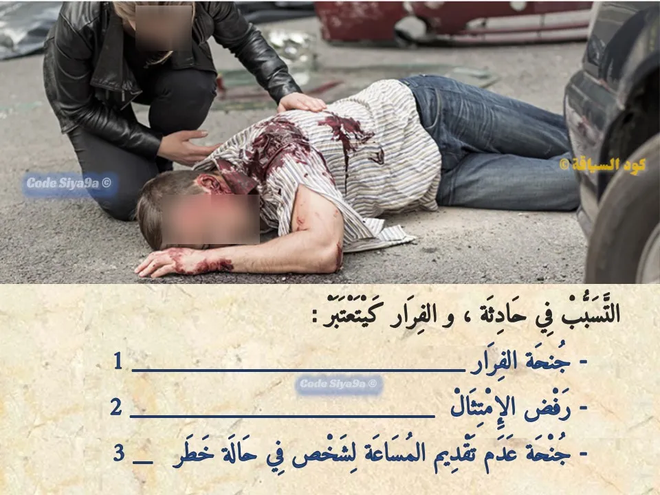
بيّن الجواب
الجواب الصحيح: 1
في حالة التسبب في حادثة . تم الفرار .
- اولا السائق غادي يكون ارتكب جنحة الفرار ، حيت واحب على السائق يبقى في المكان ديال الحادثة .
السؤال 37
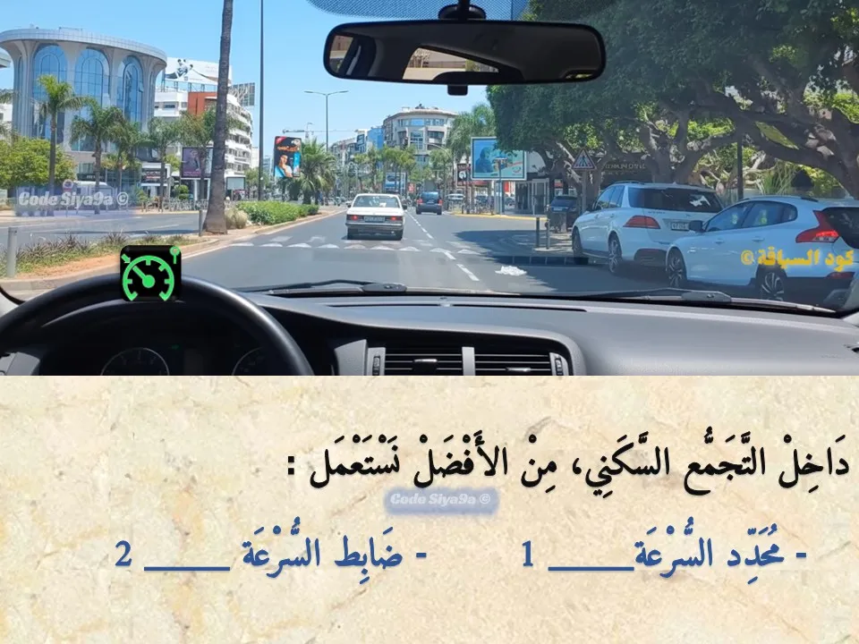
بيّن الجواب
الجواب الصحيح: 1
داخل التجمع السكني. كيكون السير ب وتيرة قليلة و نظرا لوجود اخطار متنوعة . ما يمكنش ليا نستعمل منظم السرعة.
اما محدد السرعة يمكن ليا نستعملوا في جميع الحالات .
السؤال 38
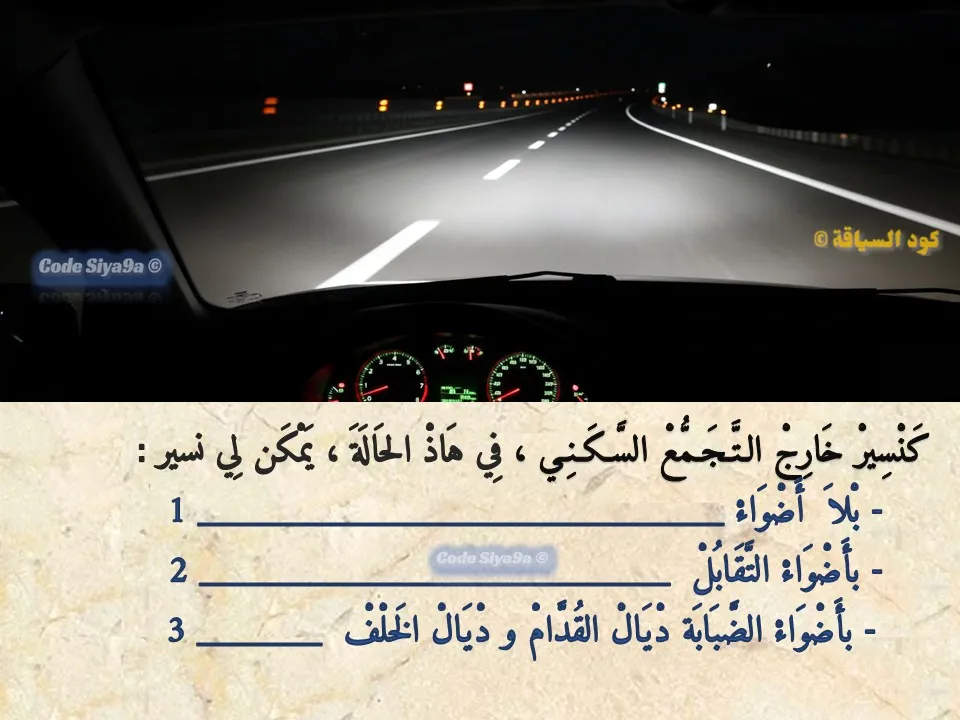
بيّن الجواب
الجواب الصحيح: 2
السير خارج التجمع السكني في هذا الحالة كاين عربات قدامي . و بالتالي واحب عليا نشغل اضواء التقابل .
- في هذا الحالة يمكن لي نستعمل بالإضافة لاضواء التقابل اضواء الوضع .
- ⛔ في هذا الحالة ما يمكنش لي نستعمل اضواء الضبابة حيت ما كاينش الضبابة .
السؤال 39
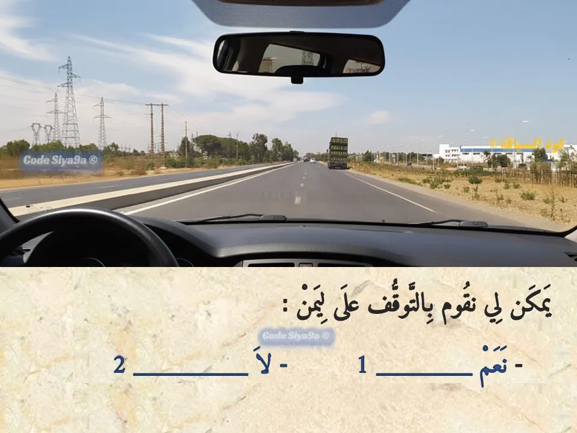
بيّن الجواب
الجواب الصحيح: 1
الخطوط لي في اليمين ديال الطريق متقطعة و بالتالي يمكن لي نتوقف على ليمن ديال هذا الطريق .
السؤال 40
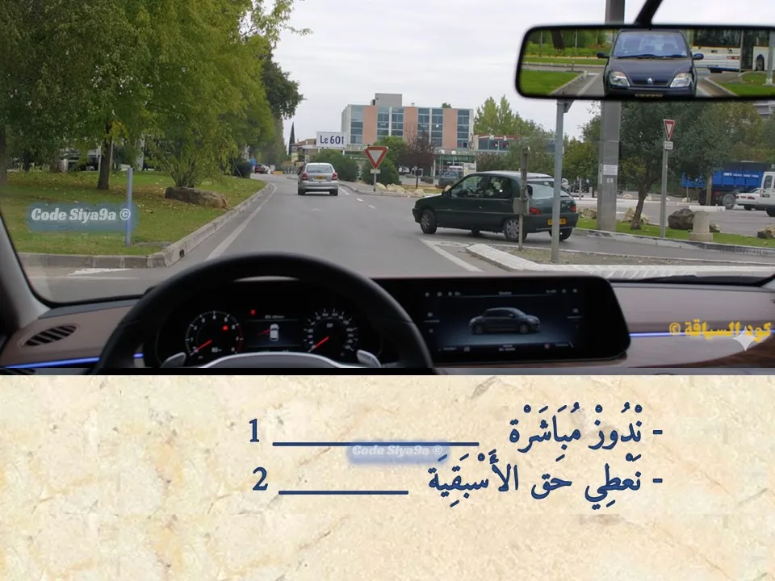
بيّن الجواب
الجواب الصحيح: 1
في الحالة السائق لي ليمن ديالي عندوا مثلث مقلوب . يعني ما عندوش حق الأسبقية. يعني انا لي عندي حق الأسبقية و بالتالي ندوز انا الاول